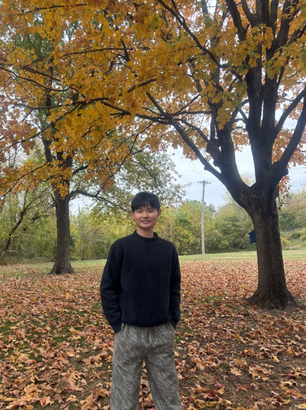

About Me

Hi! I'm a junior electrical engineering student at Iowa State University with a passion for learning and a strong foundation in circuits, programming, and renewable energy systems[cite: 1, 2]. Experienced in laboratory work, tutoring, and technical projects, passionate about renewable energy & electric circuit design[cite: 1, 2].
Resume
Job Experiences
- Validate geospatial coordinates for 93,000+ power grid buses in PSS®E model using OpenInfraMap, OSM, and other datasheets[cite: 2].
- Analyze transmission parameter data such as line impedance, charging susceptance, and power capacity to verify bus locations[cite: 2].
- Facilitate students in Electric Circuit lab sections on DC/AC circuit analysis while providing technical guidance on using oscilloscopes, function generators, and multimeters[cite: 2].
- Evaluate and grade weekly laboratory reports to provide feedback on experimental methods and calculations[cite: 2].
- Conducted standardized seed germination tests while documenting sample development to maintain data accuracy standards[cite: 2].
- Calibrated and maintained laboratory equipment to support streamlined workflow and reliable measurements[cite: 2].
Subjects Taken
Projects & Works
Details to be updated soon.
Designed a memory game using Arduino and LEDs. The Arduino would randomly generate a sequence of LEDs to light up, and the player had to match the sequence correctly to advance to the next level. Each level would add another LED in the sequence. This process continued until the player mismatched the sequence, and then it would be game over.
Designed a reaction game using Arduino and LEDs. This game was set up to sum up the cumulative reaction time of pressing the button that was connected to the LED that was randomly switched off. In the end, the LCD screen will display the sum reaction time after 20 button presses.
An abstract and study detailing global warming's impacts on ocean acidification, coral bleaching, fisheries, and thermohaline ocean circulation[cite: 3].
Analysis of direct and indirect water footprints in modern data center infrastructure, PUE/WUE metrics, and cooling technologies[cite: 4].
An educational video discussing renewable energy dynamics and system paradigms.
A technical analysis of semiconductor diode structures, p-n junction depletion regions, and photoelectric energy conversion in solar cells[cite: 5].